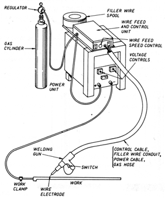
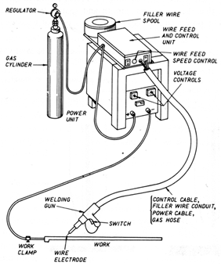

1. WORKING METHOD  Figure 36: A graphic desription of the MIG - "Metal Inert Gas Welding" welding machine. (Davies 1986: 85)
 Figure 36: A graphic desription of the MIG - "Metal Inert Gas Welding" welding machine. (Davies 1986: 85)